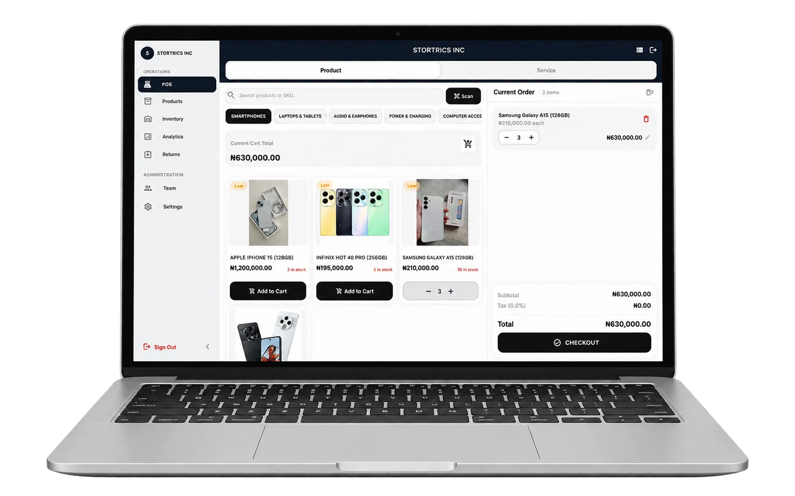
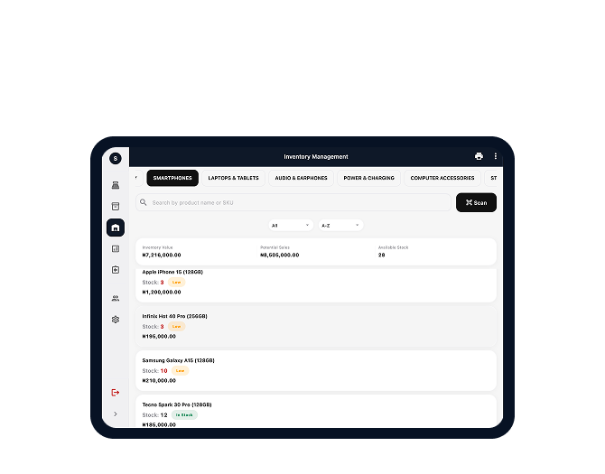
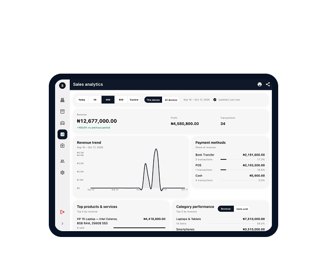
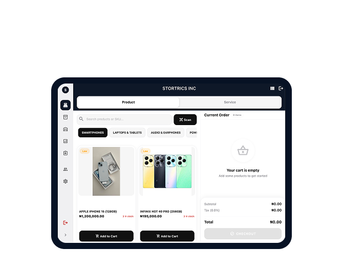
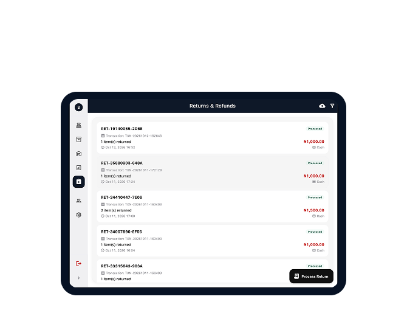

Your current setup
- Sales written in exercise books
- Stock updates buried in chats
- Profit worked out after closing
- Unclear records of staff changes
Sales and stock software for Nigerian businesses
Record sales, keep track of stock and see the profit on what you sell. For shops that sell products, services or both.
Keep selling when the network drops.

These questions keep every business owner up at night — whether you run a pharmacy, a supermarket, a salon, or a gadget store. If you've asked yourself any of them, Stortrics was built for you.
The Difference
Less guesswork for Nigerian shops. See sales, stock and profit as you record them.
Stock levels update with each recorded sale.

See daily profit from recorded sales and costs.

Keep selling offline. Sync when the network is back.

Process returns and refunds directly from the app.

Actual Stortrics screens with demo data. Select a device for a closer look.
For businesses that sell products, services or a mix of both.
Book a demo, ask your questions and see whether Stortrics fits the way you run your shop.
Send us a message on WhatsApp and tell us what your shop sells.
We'll talk through your products, staff and devices, and answer your questions.
If Stortrics is a good fit, we'll help you set up your products and staff accounts.
A few answers about using Stortrics in your shop.
Yes. Once your shop is set up on a device, you can record sales and use locally saved stock information without internet. You'll need a connection for setup and online features.
Stortrics is software for recording sales and managing stock. It isn't a bank card terminal. You can record how a customer paid, including cash, a transfer or a card payment made through your existing terminal.
Stortrics runs on Windows desktops and laptops, and on Android phones and tablets. Receipt printing depends on the device and printer connection. Tell us what you use and we'll check the setup with you during the demo.
Have your product list and stock counts ready. During the demo, we'll show you how to add products, set opening stock and organise your categories. If you use a spreadsheet, we can discuss how to prepare those records.
Ask for a quote during the demo. We'll discuss your business size, branches and the features you need, so you can review the cost before deciding.
Book a demo and ask about the setup and pricing for your business.